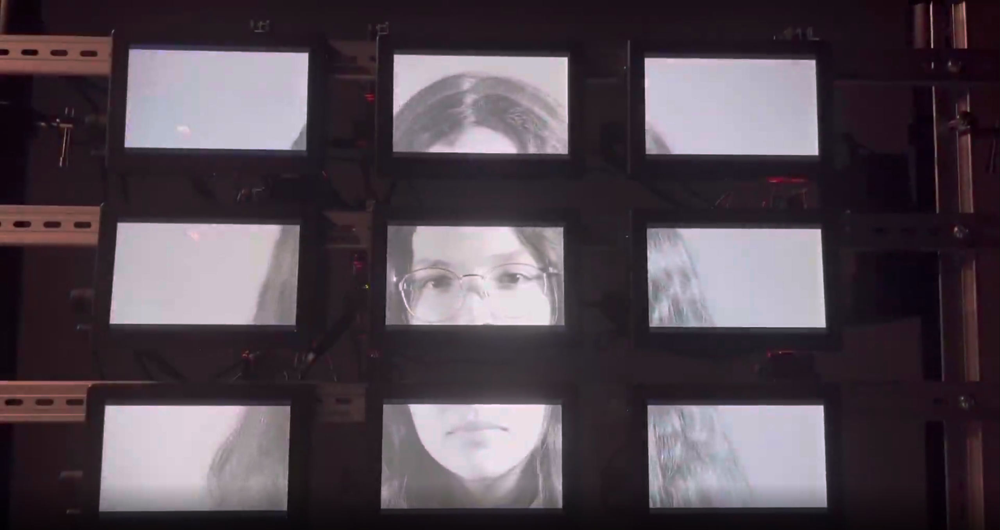
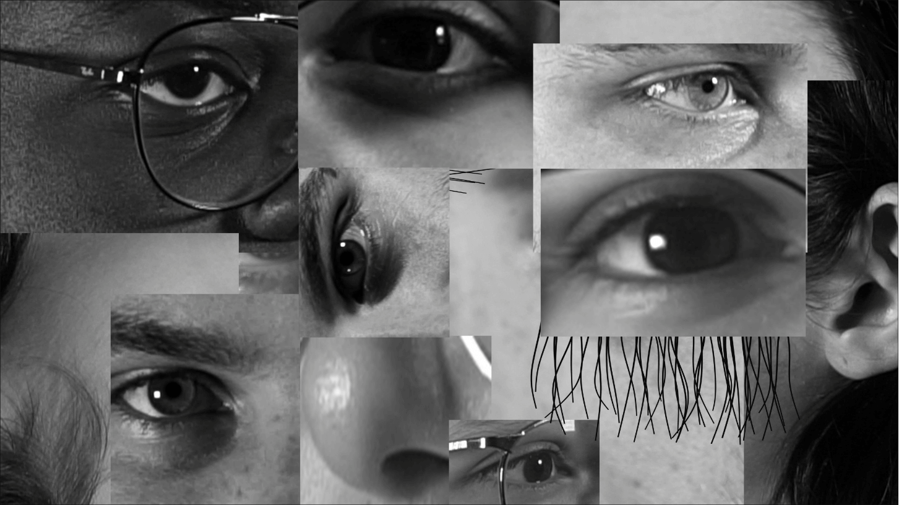
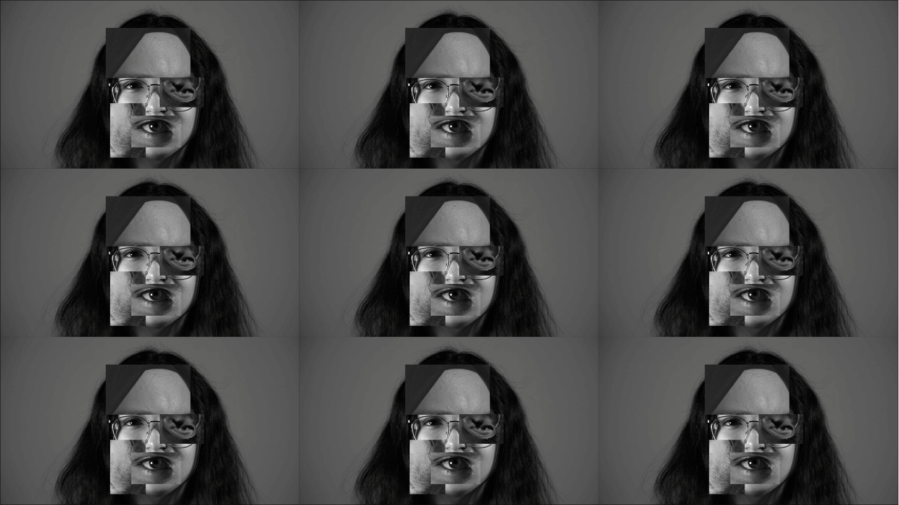
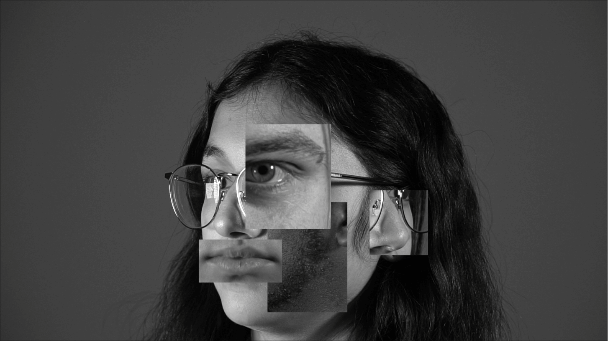
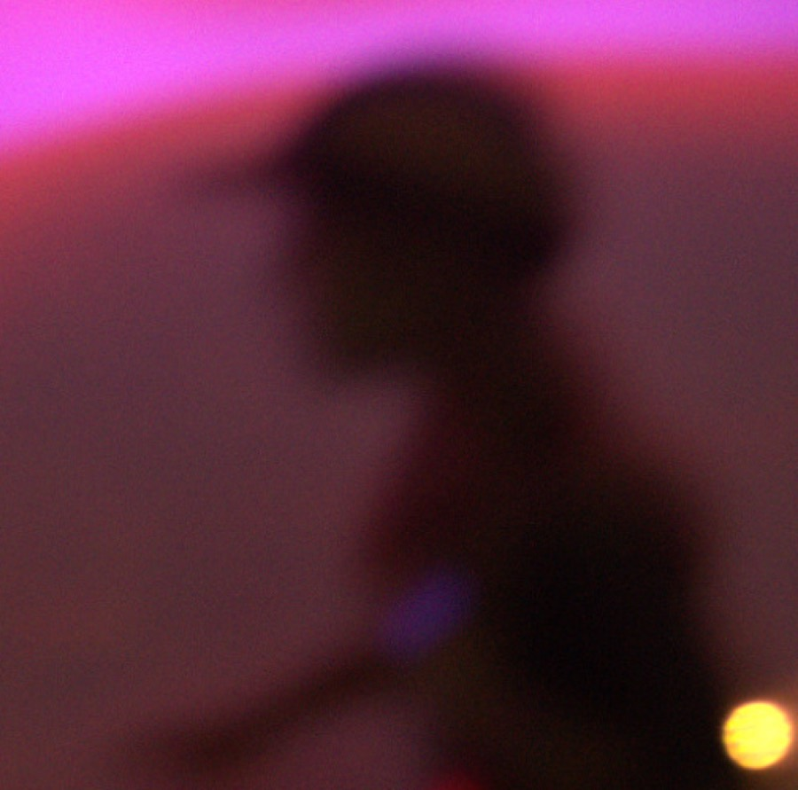

Cliquer pour regarder
Vidéographie
(5/21)
Synopsis
Maniac s'inspire du thème de la destruction et de la création, de la construction et de la
déconstruction,
du chaos, et de la psychédélie. Celle-ci s'inspire aussi de l'esthétisme du cubisme en reprenant sa
vision
multidimensionnelle des corps. En effet, des artistes comme celui qui a créé le cubisme, Picasso, est
l'univers vers lequel le court métrage de dirige. L'ambiance est crue, psychédélique et étrange. La
personne
en question nous fait pénétrer dans un univers inhabituel en montrant plusieurs détails du corps et du
visage.
Elle est autant familière et intemporelle que atypique et inconfortable. Avec une musique rapide et
rythmée,
les décors et les costumes monotones viendront appuyer le côté psychédélique du court-métrage.
Le court-métrage "Maniac" avait pour but de montrer l'obsession que l'homme à la chemise bleue à envers
la fille. En entrant dans son imaginaire, l'auditeur découvre un monde chaotique et obsessif. Une des
contraintes imposé de ce projet était que la vidéo soit à la fois présentable dans un contexte avec neuf
écrans qui projettent en simultané la vidéo, mais que cette vidéo soit aussi présentable dans un
contexte
standard ou la vidéo n'affiche que sur un écran. Le montage vidéo a été fait dans Davinci
et le montage sonore dans FL Studio.
Images4 photos




